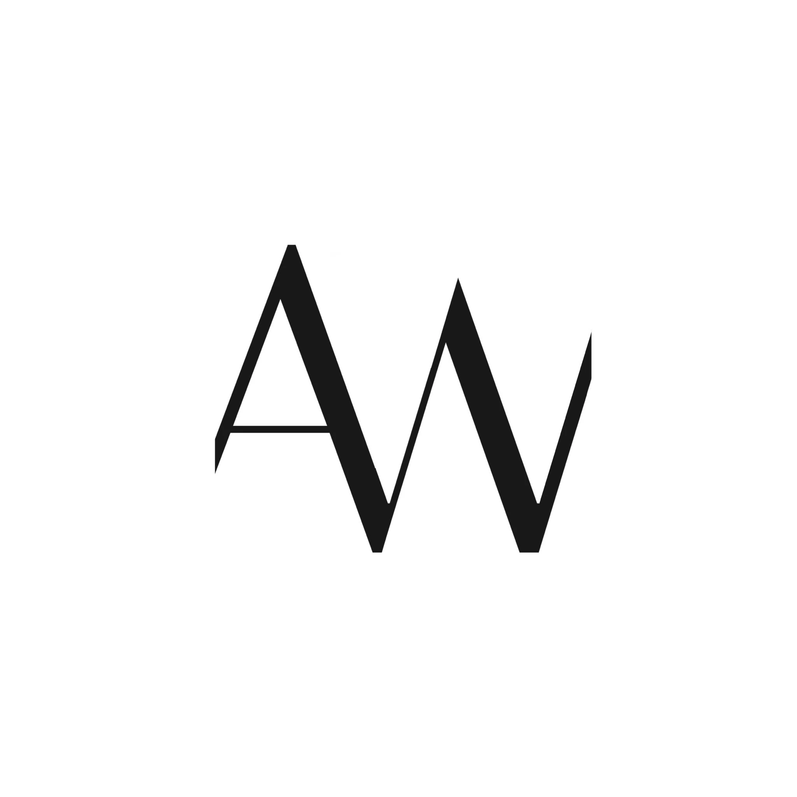

Obje
Vazo, ayna, tepsi ve aydınlatma gibi küçük ölçekli tasarımlar — günlük kullanımda dokunmayı, bakmayı ve yavaşlamayı hatırlatan parçalar.

Aysa WorksVazo, ayna, tepsi ve aydınlatma gibi küçük ölçekli tasarımlar — günlük kullanımda dokunmayı, bakmayı ve yavaşlamayı hatırlatan parçalar.